컴퓨터응용밀링기능사 (2013-07-21 기출문제)
1과목: 기계재료 및 요소
1. 18-8형 스테인리스강의 주성분은?
- Cr 18% - Ni 8%
- Ni 18% - Cr 8%
- Cr 18% - Ti 8%
- Ti 18% - Ni 8%
(정답률: 69%)

2. 다음중 연삭재 또는 연마제로 사용되는 천연 소재는?
- 알런덤
- 카보런덤
- 에머리
- 탄화붕소
(정답률: 45%)
3. 탄소강의 성질에 관한 설명으로 옳지 않은 것은?
- 탄소량이 많아지면 인성과 충격치는 감소한다.
- 탄소량이 증가할수록 내식성은 증가한다.
- 탄소강의 비중은 탄소량의 증가에 따라 감소한다.
- 비열, 항자력은 탄소량의 증가에 따라 증가한다.
(정답률: 35%)
4. 보통 주철에 Ni, Cr, Mo, Cu, Mg 등의 합금원소나 Si, Mn, P 등을 특히 다량 첨가하여 보통 주철에서 얻을 수 없는 훌륭한 기계적인 성질과 내식, 마멸성, 내열성 등의 특성을 갖도록 한 것은?
- 합금 주철
- 칠드 주철
- 가단 주철
- 미하나이트 주철
(정답률: 47%)
5. 특수청동 중 시효 경과 처리 후의 강도가 981 MPa 이상으로 특수강에 견줄만하며, 뜨임 경화 시효성이 뚜렷하여 베어링, 고급 스프링, 전기 접점, 전극 등에 사용되는 것은?
- 알루미늄 청동
- 베릴륨 청동
- 아암즈 청동
- 코슨 합금
(정답률: 62%)
6. 청동합금에서 탈산제로 인동을 첨가하여 제조하여 강도, 탄성률, 내마모성을 향상시킨 합금 주물로 기어, 베어링 유압실린더 등에 이용되는 것은?
- 규소청동 주물
- 납청동 주물
- 인청동 주물
- 알루미늄 청동 주물
(정답률: 70%)
7. 6:4 황동에 주석을 0.75 ~ 1% 정도 첨가하여 판, 봉 등으로 가공되어 용접봉, 파이프 선박용 기계에 주로 사용되는 것은?
- 애드미럴티 황동
- 네이벌 황동
- 델타 메탈
- 듀라나 메탈
(정답률: 58%)
8. 나사산의 각도가 미터계에서 30°, 인치계에서 29°로서 애크미 나사라고도 하는 것은?
- 사각 나사
- 사다리꼴 나사
- 톱니 나사
- 너클 나사
(정답률: 81%)
9. 축과 보스의 양쪽에 모두 키 홈을 파기 어려울 때 사용되며, 편심되지 않고 축의 어느 위치에나 설치할 수 있는 것은?
- 평 키
- 원뿔 키
- 반달 키
- 새들 키
(정답률: 37%)
10. 다음 그림과 같이 접속된 스프링에 하중(W)이 60N 이 작용할 때 처짐량(δ)은 몇 mm인가?(단, 스프링상수 K1 = k2 = 2N/mm 이다.)
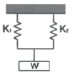
- 15
- 20
- 25
- 30
(정답률: 39%)
11. 하중이 축선에 직각으로 작용하는 곳에 사용하는 베어링은?
- 레이디얼 베어링
- 피벗 베어링
- 컬러 베어링
- 스러스트 베어링
(정답률: 58%)
12. 시간이 변함에 따라 크기와 방향이 변하지 않는 하중은?(오류 신고가 접수된 문제입니다. 반드시 정답과 해설을 확인하시기 바랍니다.)
- 정하중
- 반복하중
- 교번하중
- 충격하중
(정답률: 66%)
13. 원통 커플링의 종류에 속하지 않는 것은?
- 반중첩 커플링
- 머프 커플링
- 셀러 커플링
- 플랜지 커플링
(정답률: 45%)
14. 나사에서 리드(lead)란?
- 나사가 1회전했을 때 축 방향으로 이동한 거리
- 나사가 1회전했을 때 나사산상의 1점이 이동한 원주거리
- 암나사가 2회전 했을 때 축 방향으로 이동한 거리
- 나사가 1회전했을 때 나사산상의 1점이 이동한 원주각
(정답률: 78%)
15. 모듈(M)이 5, 잇수가 각 30개, 50개의 한 쌍의 스퍼기어가 있다. 중심거리는?
- 150 mm
- 200 mm
- 250 mm
- 300 mm
(정답률: 66%)
2과목: 기계제도(절삭부분)
16. 기계제도에서 굵은 1점 쇄선이 사용되는 용도에 해당하는 것은?
- 숨은선
- 파단선
- 특수 지정선
- 무게 중심선
(정답률: 65%)
17. 기어를 도시하는데 있어서 선의 사용방법으로 맞는 것은?(오류 신고가 접수된 문제입니다. 반드시 정답과 해설을 확인하시기 바랍니다.)
- 잇봉우리원은 가는 실선으로 표시한다.
- 피치원은 가는 2점 쇄선으로 표시한다.
- 이골원은 가는 1점 쇄선으로 표시한다.
- 잇줄방향은 보통 3개의 가는 실선으로 표시한다.
(정답률: 41%)
18. 다음 그림이 나타내는 공유합 기호는 무엇인가?
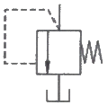
- 체크 밸브
- 릴리프 밸브
- 무부하 밸브
- 감압 밸브
(정답률: 49%)
19. 제거가공을 허락하지 않는 것을 의미하는 표면의 결 도시기호는?
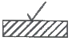
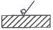
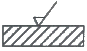
(정답률: 74%)
20. 기계제도에서 사용하는 치수 공차 및 끼워 맞춤과 관련한 용어 설명으로 틀린 것은?
- 실 치수 : 형체의 실측 치수
- 기준 치수 : 위 치수 허용차 및 아래 치수 허용차를 적용하는데 따라 허용한계치수가 주어지는 기준이 되는 치수
- 최소 허용 치수 : 형체에 허용되는 최소 치수
- 공차 등급 : 기본공차의 산출에 사용하는 기준치수의 함수로 나타낸 단위
(정답률: 59%)
21. 치수를 표현하는 기호 중 치수와 병용되어 특수한 의미를 나타내는 기소를 적용할 때가 있다. 이기호에 해당하지 않는 것은?
- Sø7
- C3
- ∠5
- SR15
(정답률: 62%)
22. 그림과 같은 입체도에서 화살표 방향을 정면으로 할 경우 정면도로 가장 적합한 것은?
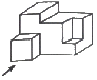
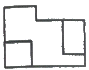
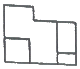
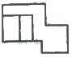
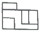
(정답률: 84%)
23. 다음 기하공차를 나타내는데 있어서 데이텀이 반드시 필요한 것은?
- 원통도
- 평행도
- 진직도
- 진원도
(정답률: 55%)
24. 다음이 도시된 단면도의 명칭은?
- 전단면도
- 한쪽 단면도
- 부분 단면도
- 회전도시 단면도
(정답률: 71%)
25. 아래 도시된 내용은 리벳 작업을 위한 도면이다. 바르게 설명한 것은?
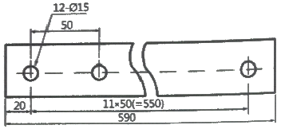
- 양끝 20mm 띄워서, 50mm의 피치로 지름 15mm의 구멍을 12개 뚫은다.
- 양끝 20mm 띄워서, 50mm의 피치로 지름 12mm의 구멍을 15개 뚫은다.
- 양끝 20mm 띄워서, 12mm의 피치로 지름 15mm의 구멍을 50개 뚫은다.
- 양끝 20mm 띄워서, 15mm의 피치로 지름 50mm의 구멍을 12개 뚫은다.
(정답률: 65%)
26. 기어를 가공하는 방법으로 적당하지 않는 것은?
- 형판에 의한 방법
- 연동척에 의한 방법
- 총형 커터에 의한 방법
- 창성법에 의한 방법
(정답률: 49%)
27. 보통 버니어캘리퍼스로 측정할 수 없는 것은?
- 외측 측정
- 나사 유효경 측정
- 좁은 폭 측정
- 내측 측정
(정답률: 76%)
28. 지름 100mm, 길이 300mm인 연강봉을 선반에서 가공할 때 이송을 0.2mm/rev, 절삭속도를 157m/min으로 하면 1회 가공하는데 걸리는 시간은?
- 3분
- 4분
- 5분
- 6분
(정답률: 39%)
29. 수직 밀링 머신에서 기둥의 슬라이드면을 따라 상하로 이송하는 밀링 장치는?
- 니(Knee)
- 새들(saddle)
- 테이블(table)
- 오버 암(over arm)
(정답률: 59%)
30. 절삭공구를 계속 사용하였을 때 나타나는 현상이 아닌 것은?
- 절삭성이 저하된다.
- 가공치수의 정밀도가 떨어진다.
- 표면거칠기가 나빠진다.
- 소요 절삭동력이 감소한다.
(정답률: 74%)
3과목: 기계공작법
31. 각도 측정기에 해당하지 않는 것은?
- 사인바
- 각도 게이지
- 서피스 게이지
- 콤비네이션 세트
(정답률: 64%)
32. 수평 밀링머신의 플레인 커터 작업에서 상향 절삭에 대한 특징으로 맞는 것은?
- 날 자리 간격이 짧고, 가공면이 깨끗하다.
- 기계에 무리를 주지만 공작물 고정이 쉽다.
- 가공할 면을 잘 볼 수 있어 시야 확보가 좋다.
- 커터의 절삭방향과 공작물의 이송방향이 서로 반대로 백래시가 없어진다.
(정답률: 59%)
33. 선반에서 다음 설명에 해당하는 부분은?
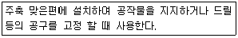
- 심압대
- 주축대
- 베드
- 왕복대
(정답률: 67%)
34. 밀링 머신에서 공구의 떨림 현상을 발생하게 하는 요소와 가장 관련이 없는 것은?
- 가공의 절삭조건
- 밀링 커터의 정밀도
- 공작물의 고정 방법
- 밀링 머신의 크기
(정답률: 79%)
35. 드릴링, 보링, 리밍 등 1차 가공한 것을 더욱 정밀하게 연삭 가공하는 것으로 구멍의 진원도, 진직도 및 표면 거칠기 등을 향상시키기 위한 가공방법은?
- 래핑
- 수퍼피니싱
- 호닝
- 방전가공
(정답률: 37%)
36. 무겁고 회전시키기가 곤란하거나 중량이 커서 편심으로 가공될 우려가 있는 제품의 구멍을 2차 가공하여야 할 때 적합한 공작기계는?
- 보링머신
- 플레이너
- 셰이퍼
- 호빙머신
(정답률: 48%)
37. 다음 중 구멍이 있는 공작물을 조정하여 동심으로 가공할 때 사용되는 선반용 부속장치는?
- 맨드릴
- 단동척
- 방진구
- 심압대
(정답률: 43%)
38. 가공물의 표면 거칠기를 나쁘게 하고 공구의 수명을 단축시키며 진동 등의 원인이 되는 구성인선 발생을 억제할 수 있는 것은?
- 절삭 깊이를 크게 한다.
- 윤활성이 좋은 절삭유제를 사용한다.
- 절삭 속도를 작게 한다.
- 공구의 윗면 경사각을 작게 한다.
(정답률: 65%)
39. 센터리스(centerless) 연삭기에는 이송 장치가 따로 없다. 무엇이 이송을 대신해 주는가?
- 연삭 숫돌
- 공작물 지지대
- 공작물
- 조정 숫돌
(정답률: 40%)
40. 일반적으로 유동형 칩이 발생하는 조건으로 틀린 것은?
- 절삭 깊이가 적을 때
- 절삭 속도가 빠를 때
- 메진 재료를 저속으로 절삭할 때
- 공구의 윗면 경사각이 클때
(정답률: 67%)
4과목: CNC공작법 및 안전관리
41. 연삭작업에서 로딩(눈메움)이 일어나는 경우로 적합하지 않은 것은?
- 드레싱 한 연삭숫돌을 사용할 경우
- 연성이 큰 재료를 연삭할 경우
- 결합도가 너무 단단하여 자생작용이 어려운 경우
- 조직이 지나치게 치밀한 경우
(정답률: 46%)
42. 환봉 또는 관 왼경 등의 원통 외면에 수나사를 내는 공구는?
- 탭
- 드릴
- 리머
- 다이스
(정답률: 63%)
43. A점에서 B점으로 그림과 같이 원호 가공하는 프로그램으로 맞는 것은?
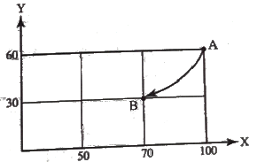
- G90 G02 X70.0 Y30.0 R30. ;
- G90 G03 X70.0 Y30.0 R30. ;
- G91 G02 X70.0 Y30.0 R30. ;
- G91 G03 X70.0 Y30.0 R30. ;
(정답률: 48%)
44. 머시닝센터의 절대 좌표를 나타낸 화면이다. 공구의 현재위치가 다음과 같이 표시될 수 있도록 반자동(MDI)모드에서 공작물의 좌표계의 원점을 설정하고자 할 때 입력할 내용으로 적당한 것은?
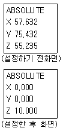
- G89 X0. Y0. Z10. ;
- G90 X0. Y0. Z10. ;
- G91 X0. Y0. Z10. ;
- G92 G90 X0. Y0. Z10.
(정답률: 34%)
45. CNC 선반에서 단면이나 테이퍼 가공시 절삭속도를 일정하게 유지시키고자 할 대 사용되는 준비기능은?
- G94
- G96
- G97
- G98
(정답률: 52%)
46. CNC 선반에서 공구기능 T⑤03에서 "03"이 뜻하는 것은?
- 공구 보정번호
- 공구 번호
- 공구 수
- 공구 보정량
(정답률: 66%)
47. CNC 공작기계의 일상 점검 중 매일 점검사항이 아닌 것은?
- 작동점검
- 게이지 압력점검
- 기계의 정도검사
- 유량 점검
(정답률: 61%)
48. 일감을 측정하거나 정확한 거리의 이동 또는 공구보정할 때 사용하며 현 위치가 좌표계의 원점이 되고 필요에 따라 그 위치를 기준점으로 지정할 수 있는 좌표계는?
- 상대 좌표계
- 기계 좌표계
- 공구 좌표계
- 임시 좌표계
(정답률: 60%)
49. CNC 선반 프로그램 중 G70 P10 Q50 ; 에서 P10의 의미는?
- 다듬절삭 지령절의 첫 번째 전개번호
- 다듬절삭 지령절의 마지막 전개번호
- 거친절삭 지령절의 첫 번째 전개번호
- 거진절삭 지령절의 마지막 전개번호
(정답률: 50%)
50. 모터에서 속도를 검출하고 기계의 테이블에서 위치를 검출하여 피드백 시키는 그림과 같은 서버기구 방식은?
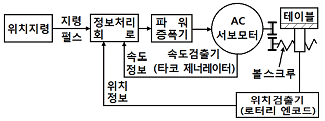
- 하이브리드 방식
- 폐쇄회로 방식
- 반폐쇄회로 방식
- 개방회로 방식
(정답률: 37%)
51. CNC 선반에서 지령값 X75.0으로 프로그램하여 소재를 시험 가공한 후에 측정한 결과 ø74.95 이었다. 기존의 X축 보정값을 0.0⑤라 하면 공구 보정값을 얼마로 수정해야 하는가?
- 0.0⑤
- 0.045
- 0.⑤5
- 0.01
(정답률: 52%)
52. 다음은 공구 길이 보정 프로그램이다. ( ) 안에 알맞은 것은?
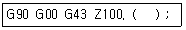
- D01
- H01
- S01
- M01
(정답률: 46%)
53. CNC 선반 작업시의 안전사항 중 잘못된 것은?
- 공작물을 고정한 다음 회전시키면서 공작물의 중심이 잘 맞았는지 점검한다.
- 공구는 공작물과 충분한 거리를 유지하도록 돌출거리를 크게 한다.
- 치수 검사는 공작물의 회전이 완전히 멈춘 다음 측정한다.
- 공구 교환 위치는 공작물과 충돌하지 않는 위치로 한다.
(정답률: 63%)
54. 그림의 (A), (B), (C) 에 해당하는 공작기계로 적당한 것은?
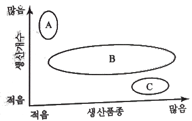
- (A) : 범용기계, (B) : 전용기계, (C) : CNC 공작기계
- (A) : 범용기계, (B) : CNC 공작기계, (C) : 전용기계
- (A) : 전용기계, (B) : 범용기계, (C) : CNC 공작기계
- (A) : 전용기계, (B) : CNC 공작기계, (C) : 범용기계
(정답률: 50%)
55. 머시닝센터의 준비기능에 대한 설명 중 틀린 것은?
- G17 - XY 평면 지정
- G21 - 메트릭 변환(metric-data) 입력
- G43 - 공구길이 보정 +
- G54 - 로칼(local) 좌표계 설정
(정답률: 48%)
56. CAM 시스템의 가공 과정 흐름도로 올바른 것은?
- 공구경로 생성 → 곡면 모델링 → NC데이터 생성 → DNC 전송
- 곡선 모델링 → 공구경로 생성 → NC데이터 생성 → DNC 전송
- 곡면 모델링 → NC데이터 생성 → 공구경로 생성 → DNC 전송
- 공구경로 생성 → NC데이터 생성 → 곡면 모델링 → DNC 전송
(정답률: 43%)
57. 공작기계 작업에서 안전에 관한 사항으로 틀린 것은?
- 기계 위에 공구나 작업복 등을 올려놓지 않는다.
- 회전하는 기계를 손이나 공구로 멈추지 않는다.
- 칩이 비산 할 때는 손으로 받아서 처리한다.
- 절삭 중이나 회전 중에는 공작물을 측정하지 않는다.
(정답률: 84%)
58. CNC 선반에서 나사 절삭에 사용하는 준비기능이 아닌 것은?
- G32
- G76
- G90
- G92
(정답률: 52%)
59. 준비기능 중 절삭가공에 사용되는 기능이 아닌 것은?
- G00
- G01
- G02
- G03
(정답률: 71%)
60. 다음 지령절에서 직경(d)이 ømm 일 때 주축의 회전수는 얼마인가?
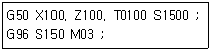
- 150rpm
- 1000rpm
- 1500rpm
- 2387rpm
(정답률: 55%)